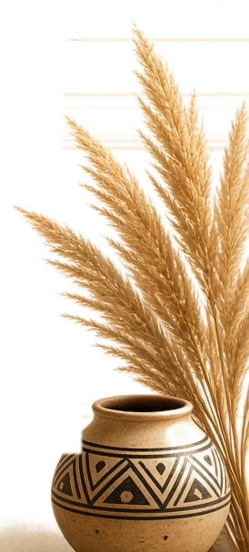

Oh la honte !& la peur d’avoir honte
Venez avec le projet que vous repoussez par peur du jugement. En 7 jours, identifiez précisément ce qui le bloque, faites un premier pas concret et repartez avec vos prochaines étapes et une date pour vous lancer.
Quel est le projet que vous repoussez depuis longtemps, parce que vous avez peur de ce que les autres vont penser de vous ?
Accès personnel et confidentielCommencer la formationUne question avant d’acheter ? Écrivez-moi sur WhatsApp

Et si ce n’était pas un manque de capacité, mais la peur de vous exposer ?
Une idée reste dans un carnet. Une activité ne voit jamais le jour. Une formation est sans cesse reportée. Une prise de parole est toujours remise à plus tard.
La honte nous fait croire que nous ne sommes pas assez. La peur d’avoir honte nous fait anticiper le jugement avant même d’agir. Ce programme travaille les deux : clarifier ce qui bloque, et vous lancer.

D’abord comprendre la honte, pour ne plus la subir.
- Ce qu’est la honte, et en quoi elle diffère de la culpabilité et de la peur du jugement
- D’où elle vient
- Ce qu’elle vous coûte et ce qu’elle vous empêche de faire
- Comment cesser de la laisser décider à votre place
Pas un exercice abstrait : votre projet.
Chaque jour commence par un enseignement à lire. Puis vous passez à la pratique, appliquée à un projet : au premier jour, vous choisissez celui que vous repoussez, par peur de ne pas être assez ou pour une autre raison. Pendant sept jours, chaque exercice et chaque échange avec Kenan s’appuient sur ce projet. Il n’y a pas de petit projet : seul compte celui qui est important pour vous.
- Lancer une activitéUne offre, un service, une première vente.
- Vous rendre visiblePrendre la parole, publier, présenter votre travail.
- Changer de voieReprendre des études, une formation, un autre métier.
- Un changement personnelCréer, écrire, dire non, poser une limite.
Sept jours, de l’hésitation au lancement.
Comprendre la honte et nommer votre projet
Ce qu’est la honte, d’où elle vient, ce qu’elle empêche. Puis le projet que vous repoussez à cause d’elle.
Les jugements que vous redoutez
Séparer ce que vous imaginez de ce que vous savez vraiment, si vous vous lancez.
Ce qui vous retient vraiment
Les conséquences de la honte, visibles et invisibles. Repérer comment vous évitez ce projet, et distinguer vos vrais besoins pour commencer de ce qui relève seulement de la peur.
Séparer votre valeur de votre projet
Comment dépasser la honte, en commençant par ne plus confondre votre valeur avec la réussite du projet ou l’avis des autres.
Faire un premier pas vers votre projet
Choisir une première action concrète, et la réaliser dans les 24 heures.
Faire face aux réactions
Préparer vos réponses aux remarques, et choisir à qui parler du projet en premier.
Vous lancer
Fixer vos trois prochaines étapes et une date de démarrage.
Au bout de sept jours, vous savez quoi faire ensuite.
- le livret « Comprendre la honte », à lire avant le jour 1 : ce qu’est la honte, d’où elle vient, ce qu’elle coûte et comment la démystifier vous-même ;
- votre projet, formulé clairement, et ce qui le rend important pour vous ;
- les jugements que vous redoutez, séparés des faits ;
- vos vrais besoins pour commencer, séparés de ce qui relève seulement de la peur ;
- une première action vers le projet, choisie et datée ;
- une réponse calme aux remarques, et la personne à qui en parler en premier ;
- vos trois prochaines étapes et votre date de démarrage ;
- un bilan écrit avec vos propres mots, et le regard de Kenan sur vos progrès.
Le but n’est pas d’avoir terminé votre projet en sept jours. C’est d’avoir remplacé l’hésitation par un premier pas, un plan simple et une date. La suite dépend de votre décision : le programme vous donne de quoi la prendre.
Vous ne lisez pas seulement. Vous avancez sur votre projet.
- Un enseignement à lire, ou à écouter, après le livret d’ouverture.
- Trois questions, avec des réponses à choisir ou vos propres mots.
- Un exercice appliqué à votre projet.
- Un échange avec Kenan.
- Un court test, sans note, puis ce que vous retenez.
Chaque jour s’ouvre lorsque le précédent est terminé. Vous avancez à votre rythme, sur téléphone ou sur ordinateur, et vous reprenez là où vous l’avez laissé.
« Je garde votre projet en tête du premier au septième jour, et je vous aide à avancer, une question à la fois. »
Kenan est une intelligence artificielle conçue par FRAMYXCC selon l’approche du développement humain durable. Il s’appuie sur ce que vous écrivez, sans jugement. Il n’est ni médecin ni psychologue et ne pose aucun diagnostic.

Ce programme, je ne l’ai pas imaginé. Je l’ai vécu.
Pendant longtemps, j’ai cru que je n’avais pas le droit de m’exprimer, ni de porter mes propres projets. Quand je travaillais pour les autres, je donnais le meilleur de moi-même. Pour moi, j’hésitais.
Quand j’ai décidé d’entreprendre, il m’a fallu plus de six mois pour oser me montrer sur les réseaux. Une question tournait en boucle : est-ce que je suis légitime ? J’ai compris qu’on peut être compétente et rester freinée par la peur du jugement.
La honte ne disparaît pas parce qu’on l’ignore. Elle recule quand on la regarde en face et qu’on ose un premier pas malgré elle. Aujourd’hui, je prends la parole en public, y compris sur la scène de TEDx Abidjan.
J’ai créé ce programme pour que vous n’attendiez pas aussi longtemps que moi.
Mireille TANO-FRAM

Avant de commencer
Faut-il avoir un grand projet ?
Non. Une action personnelle importante pour vous suffit : reprendre une formation, publier un premier texte, proposer une idée au travail, dire non à quelque chose.
Est-ce une thérapie ?
Non. C’est un programme éducatif. Il ne remplace pas un accompagnement psychologique ou médical. Si une situation vous fait souffrir durablement, parlez-en à un professionnel de santé.
Qui peut lire mes réponses ?
Vos réponses sont enregistrées sur le serveur de FRAMYXCC Intelligence Agency et liées à votre lien personnel. Elles ne sont ni publiées ni partagées, et ne sont consultées qu’en cas de demande d’assistance de votre part. Vos messages à Kenan sont transmis au moteur d’intelligence artificielle uniquement pour produire ses réponses.
Comment accéder au programme ?
Cliquez sur « Commencer la formation » et payez 9 900 FCFA sur la page sécurisée de Paystack. Votre lien personnel s’affiche aussitôt et vous est envoyé par e-mail. Lien perdu ? Indiquez votre adresse e-mail sur la page du programme : il vous est renvoyé.

Votre projet mérite mieux que d’être repoussé encore une fois.
7 jours · votre projet · un premier pas · trois étapes et une date pour vous lancer.
Accès personnel et confidentielCommencer la formationUne question avant d’acheter ? Écrivez-moi sur WhatsApp
Un programme éducatif de transformation. Il ne remplace pas un accompagnement psychologique ou médical.